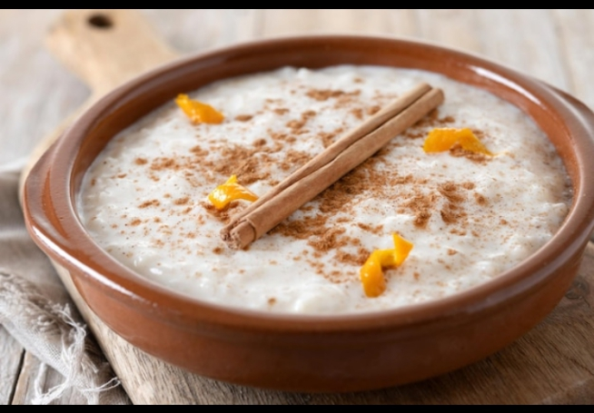
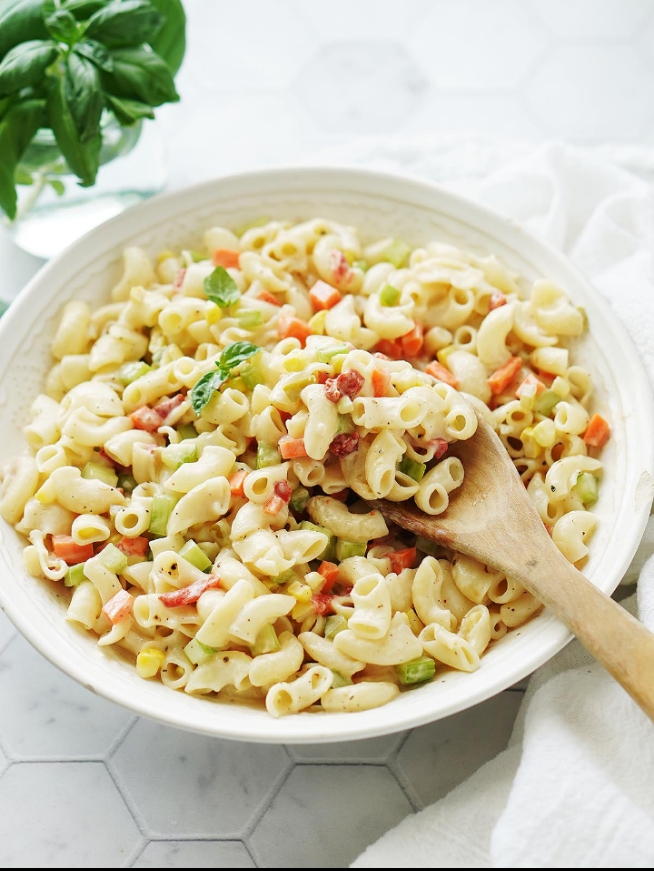
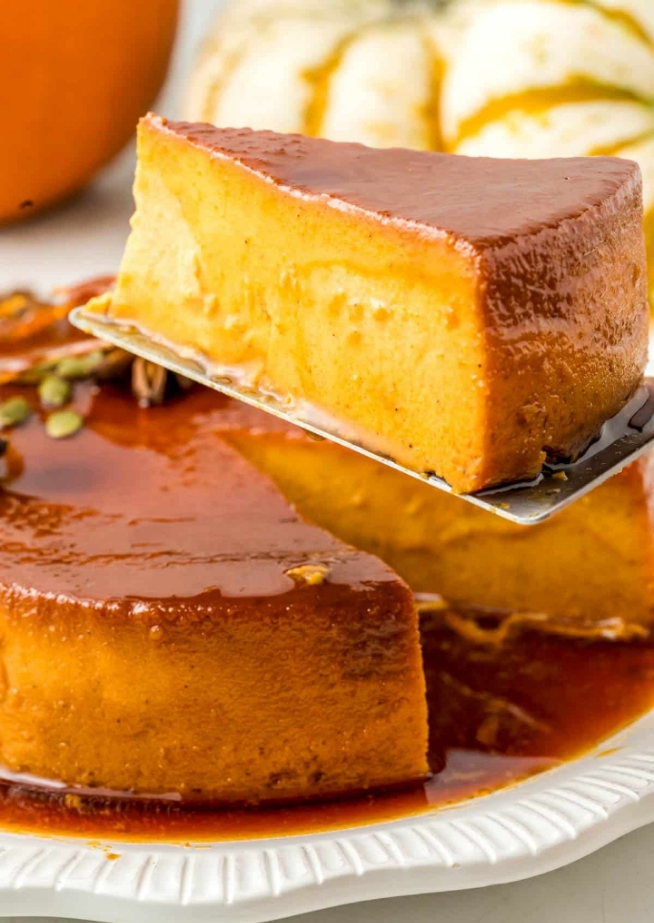
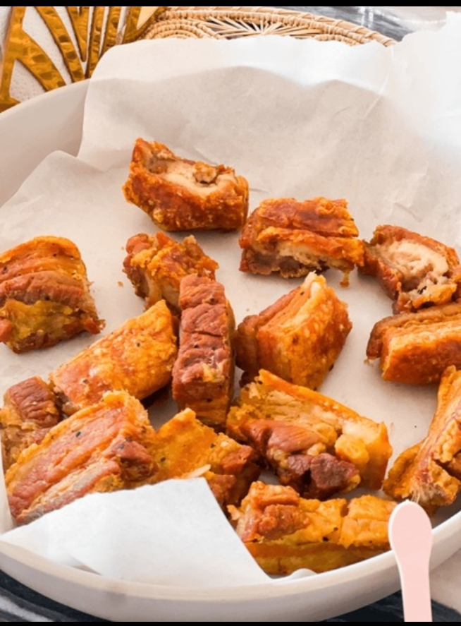

Pollo a la Piña
Jugoso, tropical y fácil de preparar. Una explosión de sabor con toques dulces y salados.
Leer artículo
Arroz con Leche
Tradicional y reconfortante, este postre casero te hará sonreír desde la primera cucharada.
Leer artículo
Ensalada Fría
Una receta sabrosa con coditos, pollo, mayonesa, jamón y piña. ¡Fresca y deliciosa!
Leer artículo
Flan de Calabaza
Un postre suave, cremoso y lleno de sabor natural. Ideal para disfrutar sin culpas.
Leer artículo
Chicharrones de Cerdo
Crujientes por fuera y suaves por dentro. Aprende cómo lograr el chicharrón perfecto.
Leer artículo